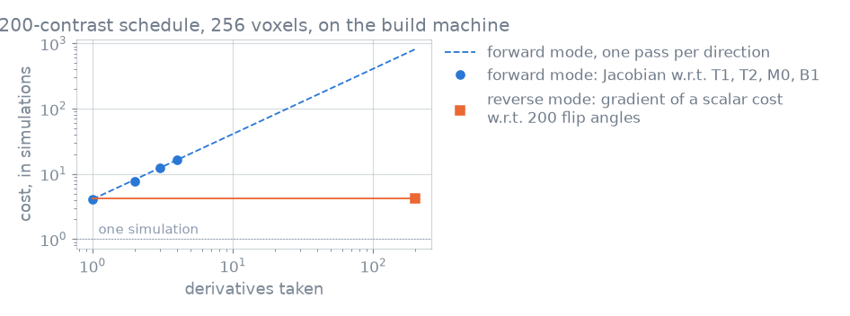

Derivatives#
TL;DR
Derivatives with respect to tissue properties are forward mode:
jacobian(), one pass per property.Derivatives with respect to sequence parameters are reverse mode:
torch.Tensor.backward()on a cost built from the signal.The Cramer-Rao bound and precision-driven sequence design are built on the Jacobian.
You ask for the derivative of the signal with respect to tissue properties to fit, map or bound them, and with respect to the sequence to design it. Both are computed by the same fused kernels that compute the signal.
Capabilities#
Returns the signal and its Jacobian with respect to the tissue properties you name, for every voxel at once.
Show code and tests
Code:
jacobian(). Tests: jacobian matches finite differences; signal matches undifferentiated call (test_jacobian_contract.py).Takes the same request as
diff=in each functional form, returning(signal, jacobian)instead of the signal.Show code and tests
Code:
spgr_sim(),fse_sim()and the other*_simfunctions. Tests: scalar derivative; multiple gradient (test_spgr_func.py).Collapses the parameter axis for a single name and keeps it, before the samples, for a sequence of names.
Show code and tests
Code:
jacobian(). Test: jacobian shapes (test_jacobian_contract.py).Refuses to differentiate a property the call did not give, and points to
backward()for a sequence argument.Show code and tests
Code:
jacobian(). Test: differentiating a property the call did not give says so (test_signal_model.py).Differentiates a cost back to flip angles, phases and event durations through a fused adjoint kernel.
Show code and tests
Code:
simulate(). Tests: a cost differentiates back to the sequence (test_signal_model.py); only duration flip and phase carry an event gradient (test_parameters.py); fused vjp matches the reference (test_vjp.py).Differentiates a cost that already contains a Jacobian, with both passes in the kernels.
Show code and tests
Code:
jacobian()undertorch.Tensor.backward(). Tests: forward over reverse matches the reference; the second pass reaches the kernels (test_vjp.py).Computes the Cramer-Rao bound from a Jacobian, counting the real and imaginary channels as separate measurements.
Show code and tests
Code:
crlb(). Tests: the bound is the variance a fit actually reaches; a complex signal counts both channels; parameters no sequence can tell apart are refused (test_design.py).Minimizes a precision cost over bounded sequence parameters.
Show code and tests
Code:
SequenceDesign,Bounded. Tests: a design lowers the cost it was given; the limits hold at every step (test_design.py).
Division of responsibility#
Derivatives beyond the second order. A third is refused rather than returned incomplete (a third derivative is refused,
test_vjp.py).Forward mode with respect to sequence parameters through
jacobian(), and reverse mode through NumPy or CuPy inputs: a gradient belongs to a torch tensor (reverse mode still needs torch,test_array_backends.py).A full Jacobian with respect to the sequence. Each reverse-mode pass gives the gradient of one scalar cost.
Method#


Forward mode costs one pass per direction; reverse mode costs a fixed number of simulations whatever the number of sequence parameters. Measured on the machine that built this page; the ratios depend on the schedule and the hardware.#
Forward-mode tissue derivatives#
Voxels are independent, so a tangent of ones along one property gives that property’s derivative in every voxel in one pass. The cost scales with the number of properties differentiated and not with the voxels or samples. The kernels carry a tangent beside each state value (dual arithmetic), so each operator is differentiated exactly rather than by finite differences.
Reverse-mode sequence derivatives#
A design cost is one number over tens to hundreds of flip angles. The adjoint kernel walks the event stream backwards over the states a forward sweep kept, and returns the gradient with respect to every flip angle, phase and duration together. No wrapper is needed: the engine reads which inputs require a gradient and selects the adjoint kernel.
Precision and the Fisher information#
For independent Gaussian noise of variance \(\sigma^2\) on the real and imaginary
channels, the Fisher information is
\(F = \operatorname{Re}(J^\mathsf{H} J) / \sigma^2\), with \(J\) the Jacobian of
the signal, and crlb() returns the diagonal of
\(F^{-1}\). A design that minimizes a bound therefore differentiates a Jacobian
with respect to the sequence: forward mode inside reverse mode, both in the
kernels.
Examples#
1. Your first simulation: a Jacobian from a functional form.
PERK: kernel ridge regression: a reported uncertainty against the Cramer-Rao bound.
Echo train design for sharpness: reverse mode on a refocusing train.
Nonlinear inversion from k-space: the Jacobian inside a model-based reconstruction.
Joint relaxometry protocol design: a schedule designed for Cramer-Rao precision.